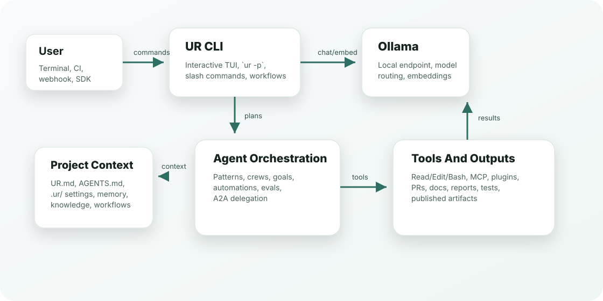

Version 1.18.0
UR Agent Documentation
A practical, tutorial-style reference for installing, configuring, automating, extending, and operating UR Agent.
What UR Is
Terminal coding agent with local-first model routing
UR runs from the terminal, uses the local Ollama app for model calls, and combines project context, tools, MCP, plugins, skills, workflows, automations, and agent orchestration into one CLI.
ur for iterative work or ur -p for scripts, CI, webhooks, SDK calls, and agent handoffs.
ur repo-edit indexes files and symbols, plans AST-aware renames, previews patches, and rolls back failed multi-file applies.
ur test-first detects compile/test/lint commands, stores failure traces, and installs edit-time verifier gates.
Install And Run
Quickstart
Install from npm, verify the binary, then choose interactive or print mode.
Install
npm install -g ur-agent
ur --versionStart a session
ur
ur --model qwen3-coder:480b-cloudRun once in scripts
ur -p "Summarize this repository"
ur -p --output-format json "Review the current diff"
Runtime requirement
UR expects Bun and a local Ollama app/server at http://localhost:11434/api. Set OLLAMA_MODEL or UR_MODEL to force a model; otherwise UR routes from the models exposed by Ollama.
Runtime
Architecture
The CLI is the control plane. Project context and .ur assets feed agent orchestration, which uses local Ollama models and approved tools to produce code, docs, PRs, reports, and automation outputs.

How To Think About It
Mental model
Session
A conversation with tools, project context, slash commands, memory, and resumable history.
Headless run
ur -p executes one prompt and exits. This is the base for automations, evals, triggers, SDK calls, and A2A tasks.
Project context
UR.md, AGENTS.md, .ur/agents, .ur/workflows, memory, knowledge, and settings shape behavior.
Permission boundary
Tool access is controlled by permission mode, allowed/disallowed tools, sandbox settings, and user approval.
Agent orchestration
Patterns, workflows, crews, goals, automations, and evals coordinate multiple specialized runs.
Evidence and verification
Self-review, verifier gates, evals, claim ledgers, browser QA, and traces help keep outputs auditable.
Capabilities
Feature map
Each group below links the major UR surfaces to when you should use them.
Tutorials
Complete workflows
Use these as practical starting points for the agent features.
Ship a coding change through PR
- Start with
urand make the implementation. - Run
ur agent-task statusto see branch and task state. - Run
ur agent-task difffor the working diff summary. - Dry-run PR creation:
ur agent-task pr --create --dry-run. - Create only after review passes:
ur agent-task pr --create.
ur agent-task status
ur agent-task diff
ur agent-task pr --create --dry-runRun a checkpointed workflow
- Create a sample workflow under
.ur/workflows. - Validate and inspect the DAG.
- Run it offline first, then live with a concurrency cap.
ur workflow init release
ur workflow validate release
ur workflow graph release --ascii
ur workflow run release --dry-run
ur workflow run release --live --concurrency 2Plan and apply a safe repo rename
- Build a file and symbol index for the repository.
- Preview the AST-aware JavaScript/TypeScript identifier patch.
- Apply transactionally with a validation command that triggers rollback on failure.
ur repo-edit index
ur repo-edit search checkoutTotal
ur repo-edit preview rename oldName --to newName
ur repo-edit apply rename oldName --to newName --check "bun test"Run test-first command evidence
- Detect the project stack and available quality commands.
- Preview compile, test, and lint evidence without executing it.
- Install the same commands as after-edit verifier gates.
ur test-first detect
ur test-first --dry-run
ur test-first installUse a multi-agent pattern
- List patterns: PEER, DOE, concurrent, handoff, debate.
- Preview the plan for your task.
- Save or execute the compiled workflow.
ur pattern list
ur pattern show peer
ur pattern run peer "Refactor auth and verify tests" --save
ur pattern run concurrent "Audit browser QA" --execute --dry-runBuild a project knowledge base
- Add curated files, directories, and notes.
- Build lexical or embedding indexes.
- Search with provenance.
ur knowledge add docs --label docs
ur knowledge add --note "Release requires bundle, smoke, package check"
ur knowledge build
ur knowledge search "release checks"Coordinate a headless crew
- Create a crew from a long goal.
- Add or inspect tasks.
- Run workers in dry-run mode first.
ur crew create docs --goal "Document every public agent feature"
ur crew show docs
ur crew run docs --workers 3 --dry-runInstall recurring automations
- Create project-local automation specs.
- Dry-run due jobs.
- Install a resident scheduler when ready.
ur automation create nightly --schedule "0 9 * * 1-5" --prompt "Review open tasks"
ur automation run-due --dry-run
ur automation install --platform launchd --interval 300
ur automation statusDrive a change from a spec
- Create a spec with requirements, design, tasks, and approval state.
- Inspect or approve each phase.
- Run the task list one item at a time, or use
--all.
ur spec init demo --goal "1. add a utils.add function 2. add a test"
ur spec status demo
ur spec approve demo requirements
ur spec run demo --all --dry-runEscalate hard work to an oracle model
- Ask UR to plan the fast/oracle model route.
- Run routine work on the fast tier.
- Force or auto-trigger oracle escalation for hard debugging and review.
ur escalate plan "debug the scheduler race"
ur escalate run "refactor the cache layer" --force-oracle --dry-run
ur escalate oracle "is this lock-free queue correct?"Compare multiple agent attempts
- Run multiple agents against the same task in isolated worktrees.
- Let the deterministic self-review gate score the candidate diffs.
- Apply the winner only when you are ready.
ur arena "implement a debounce helper" --agents 2 --dry-run
ur arena "fix the parser" --agents 3
ur arena "fix the parser" --agents 3 --applyRepair failing CI in a bounded loop
- Run the build or test command.
- Summarize the failure and launch a fix attempt.
- Rerun until the command passes or the retry budget is exhausted.
ur ci-loop --command "bun test" --dry-run
ur ci-loop --command "bun test" --max-attempts 3
ur ci-loop --from-log failure.log --dry-runCapture reviewable artifacts
- Capture the current diff or a test run under
.ur/artifacts. - Review the saved body and status.
- Approve, reject, or add feedback.
ur artifacts capture-diff
ur artifacts capture-tests --command "bun test"
ur artifacts show 1
ur artifacts approve 1Reference
CLI command reference
The table covers the public top-level commands from ur --help, with examples and common next steps.
Interactive Mode
Slash and local commands
Inside an interactive session, use /help to see what is enabled for your context. These are the main command families shipped by the repo.
Operate Safely
Configuration and security
Models
OLLAMA_MODEL=qwen3-coder:480b-cloud ur
UR_MODEL=qwen3-coder:480b-cloud ur
ur --model qwen2.5-coder:latestOLLAMA_MODEL wins over UR_MODEL. Without either, UR routes from local Ollama model inventory.
Permissions
ur -p --allowed-tools "Read,Edit,Bash(git:*)" \
--disallowed-tools "Bash(rm:*)" \
"Review the current diff"Use explicit tool boundaries for automation. Reserve --dangerously-skip-permissions for disposable sandboxes.
Verifier
UR_VERIFIER_MODE=strict
UR_VERIFIER_MODE=loose
UR_VERIFIER_MODE=off
UR_VERIFIER_AUTO_SUBAGENT=1L1 gates catch false done claims and loops. /verify manually runs deeper verification.
MCP and plugins
ur mcp list
ur mcp add-json local-tools '{"command":"node","args":["server.js"]}'
ur plugin list
ur plugin install <plugin>MCP servers and plugins expand tool access. Treat them as trusted code.
Workspace Layout
Project files UR understands
Examples
Copy-ready examples
Use these snippets as templates for common workflows.
Debugging
Troubleshooting
Installed version is old
npm uninstall -g ur-agent
npm install -g ur-agent@latest --registry=https://registry.npmjs.org/
hash -r
which -a ur
ur --versionOllama model not found
ollama list
ur model-doctor
ur model-route "Fix a TypeScript test failure"Automation did not run
ur automation list
ur automation status
ur automation run-due --dry-run
ur automation daemon --once --dry-runNeed evidence of what happened
/trace 20
ur agent-inspect --file session.jsonl
ur artifacts list
ur eval report starter
ur claim-ledger validateNew agent-platform command is missing
ur --version
ur --help | grep -E "repo-edit|test-first|spec|arena|escalate|ci-loop|artifacts"
npm install -g ur-agent@latest --registry=https://registry.npmjs.org/
hash -r